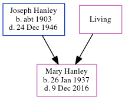

Mary Catherine Hanley 1937 - 2016
[ Home ] | [ Calendar ] | [ Surnames Index ] | [ Census Index ] | [ Family History ]The child of Joseph Hanley and Margaret Riordan, Mary Hanley, the first cousin once-removed on the father's side of Michele Copp (née Phillips), was born in Kentucky on Jan 26, 19371,2,3.
During her life, she was living in St James, Charlevoix, Michigan, USA in 19501; and in Milan, Michigan2.
She died on Dec 9, 20162 and was buried on 12 dec2.
Parents
- Joseph Chartrand was born c. 1903
- Margaret Ann
Citations
- 1950 United States Federal Census Ancestry.com Operations, Inc. (Department of Commerce. Bureau of the Census. 1913-1/1/1972. Population Schedules for the 1950 Census, 1950 - 1950. Washington, DC: National Archives at Washington, DC. Population Schedules for the 1950 Census, 1950 - 1950. NAID: 43290879. Records of the Bureau of the Census, 1790 - 2007, Record Group 29. National Archives at Washington, DC., Washington, DC.) (Relation to Head: Daughter; Marital Status: Never Married)
- U.S., Cemetery and Funeral Home Collection, 1847-Current Ancestry.com Operations Inc
- U.S., Find a Grave Index, 1600s-Current Ancestry.com Operations, Inc. (Find a Grave. Find a Grave. www.findagrave.com.)
Family Tree
Generated by ged2site. Last updated on Jun 6, 2024